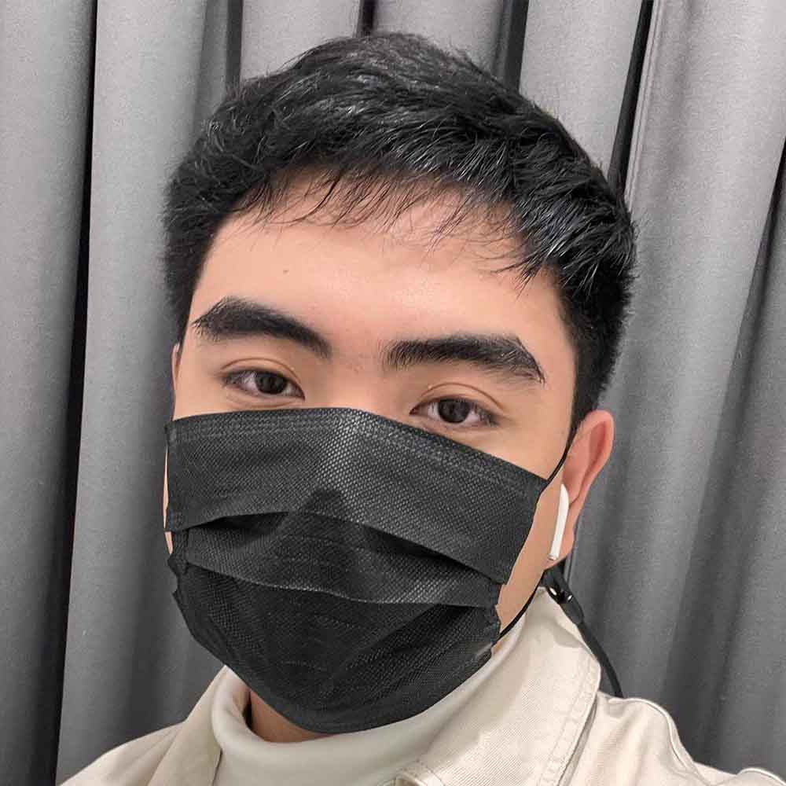
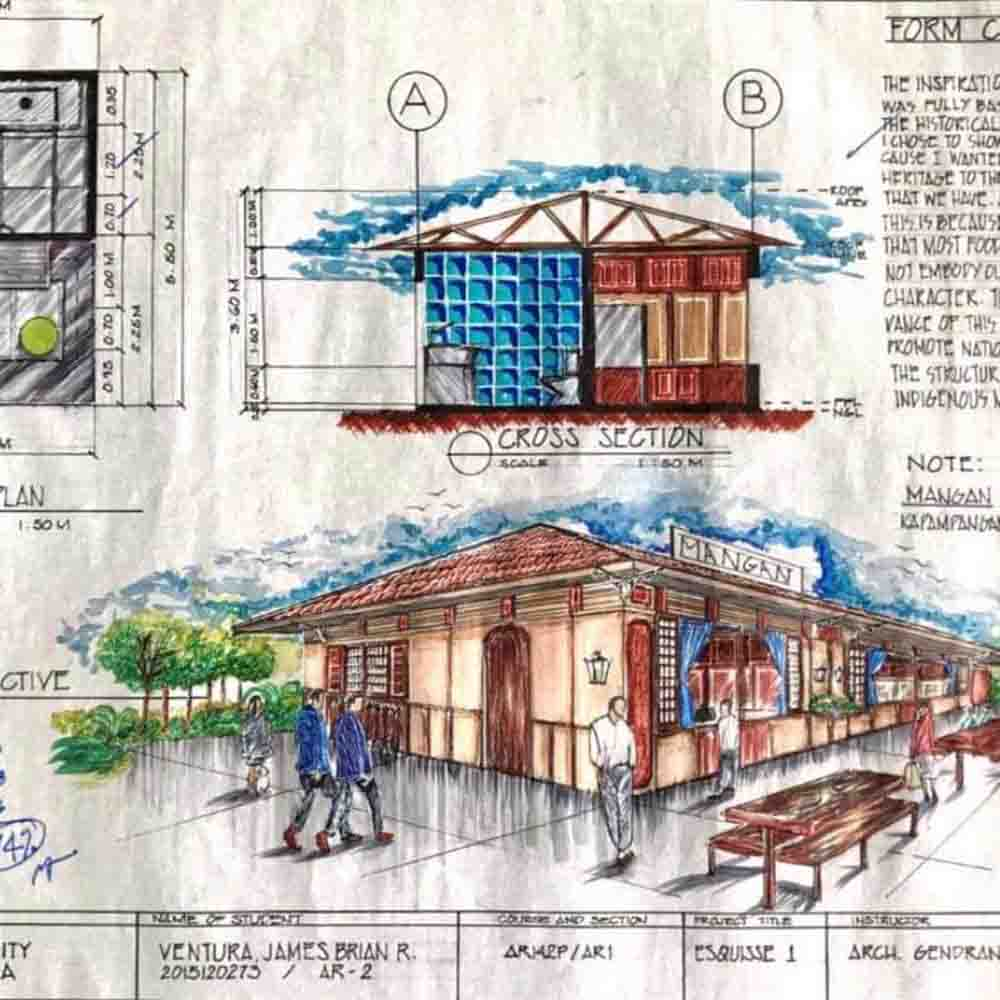

James Brian Ventura
James Brian Ventura
5th year Architect Student
5th year Architect Student
"In architecture, color makes a huge impact in the design process of buildings."

Esquisse Plate Title:
Esquisse Plate Title:
A Proposed Filipino-Themed
Food Park Kiosk
By James Brian Ventura
By James Brian Ventura
"This was instrumental for me because I can better distinguish colors in warm tones as compared to cool tones."
Marcus Aspacio
Working Student
Working Student
"It doesn’t really affect my daily life because I believe I am able to see and determine colors normally most of the time."